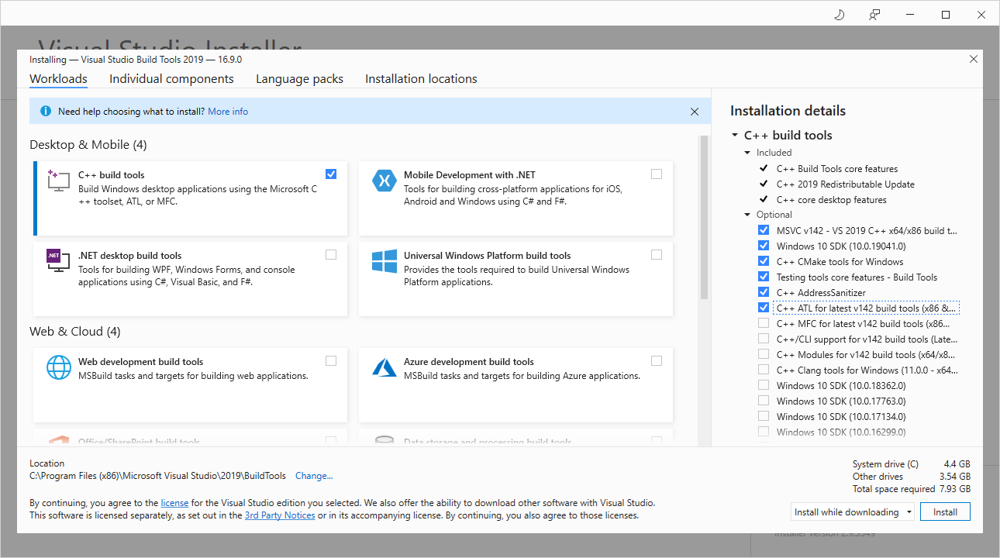
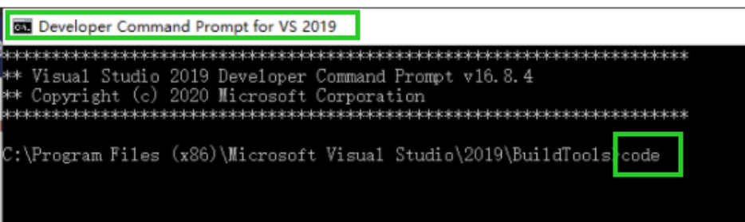

OPC DA
This section will show you how to create an OPC DA Client with 4DIAC and how to use it with FORTE. Download the following packages:
Prepare and compile OPC Client Toolkit
- Unzip Boost C++ Libraries
- Install visual studio build tools with the components shown in the below. Since Visual studio 2013, atls.lib and atlsd.lib are unified as atls.lib which together with headers could be detected by the msvc, so that no need to specify in CMakeLists.txt for OPC module.

- Clone OPC Client, check out to master branch and open the OPCClientToolKit project in Visual Studio Code, be noticed that Visual Studio Code should be started with visual studio tool chains awared, one way is that start Visual Studio Code in "Developer Command Prompt for VS 2019" shown as below

- Build project with ctrl+shift+B and choose debug or release which is same with forte.
- Create the following folder structure:
- [opcclientroot]/include - put header files from OPCClientToolKit project here
- [opcclientroot]/lib - OPCClientToolkit.lib
Compile FORTE with OPC DA Client Support
- Create a MS Visual Studio Code Project of FORTE with CMake as described in Compiling and Debugging FORTE with MS Visual Studio Code and add the following variables in settings.json which are required for OPC Client support:
- "FORTE_COM_OPC":"ON",
- "FORTE_COM_OPC_LIB_ROOT": "Your path to opc lib root",
- "FORTE_COM_OPC_BOOST_ROOT": "Your path to boost root",
- Open FORTE Project with MS Visual Studio Code.
- compile or debug FORTE
Create OPC Client
Start the 4DIAC-IDE and create a new System with a new Application for one Device. Add a CLIENT_1 Function Block to the Application, set the following input values, and map it to the hardware.
- QI = 1
- ID = opc[localhost:FestoDidactic.EzOPC.2:2000:0.01:VirtualPLC.EB0:VirtualPLC.AB0]
- SD_1 = BYTE#210
whereas the ID input has the following format:
opc[host:serverName:updateRate:deadBand:fbInputItems:fbOutputItems]
- host: address to computer with OPC server
- serverName: OPC server name, e.g. Matrikon.OPC.Simulation
- updateRate: update frequency in milliseconds
- deadBand: dead band used for update of value (same unit as value)
- fbInputItems/fbOutputItems: items to be added, items should be separated with a comma e.g.
Change to the Deployment perspective, start Forte and download the Application. Switch the System into online mode and start watching the in- and outputs. For further information about Monitoring functionalities follow the link.
After triggering the INIT event, the OPC-client tries to connect with the OPC-server. In this example the OPC-server is "FestoDidactic.EzOPC.2". It is a tool from Festo and can be downloaded here.

When the connection is established, a window of the server pops up.

Now trigger the REQ event to send the data from client to server. "BYTE#210" should be send to the server's port "VirtualPLC.EB0". Click to "Virtual Controller" tab to check if the OPC server has received the information.

Where to go from here?
Go back to Protocols index:
Communication Index
If you want to go back to the Start Here page, we leave you here a fast access
Start Here page
Or Go to top